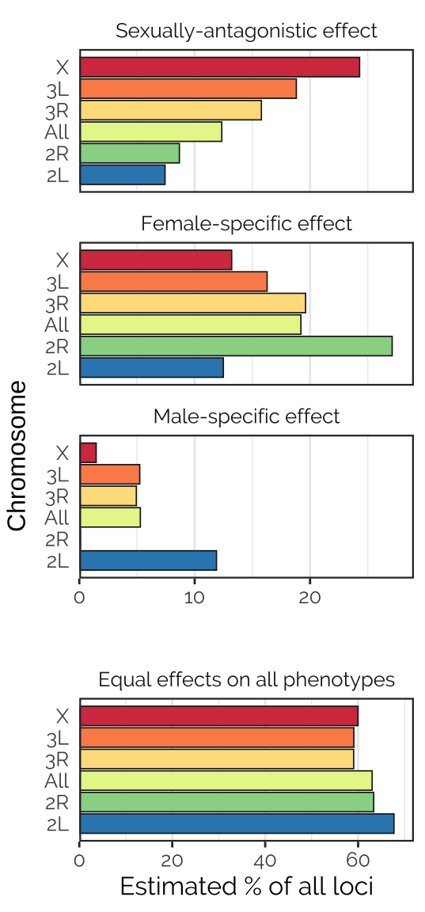

Last updated: 2021-02-14
Checks: 5 2
Knit directory: fitnessGWAS/
This reproducible R Markdown analysis was created with workflowr (version 1.6.2). The Checks tab describes the reproducibility checks that were applied when the results were created. The Past versions tab lists the development history.
The R Markdown file has unstaged changes. To know which version of the R Markdown file created these results, you’ll want to first commit it to the Git repo. If you’re still working on the analysis, you can ignore this warning. When you’re finished, you can run wflow_publish to commit the R Markdown file and build the HTML.
Great job! The global environment was empty. Objects defined in the global environment can affect the analysis in your R Markdown file in unknown ways. For reproduciblity it’s best to always run the code in an empty environment.
The command set.seed(20180914) was run prior to running the code in the R Markdown file. Setting a seed ensures that any results that rely on randomness, e.g. subsampling or permutations, are reproducible.
Great job! Recording the operating system, R version, and package versions is critical for reproducibility.
Nice! There were no cached chunks for this analysis, so you can be confident that you successfully produced the results during this run.
Using absolute paths to the files within your workflowr project makes it difficult for you and others to run your code on a different machine. Change the absolute path(s) below to the suggested relative path(s) to make your code more reproducible.
| absolute | relative |
|---|---|
| /Users/lholman/Rprojects/fitnessGWAS | . |
Great! You are using Git for version control. Tracking code development and connecting the code version to the results is critical for reproducibility.
The results in this page were generated with repository version c386787. See the Past versions tab to see a history of the changes made to the R Markdown and HTML files.
Note that you need to be careful to ensure that all relevant files for the analysis have been committed to Git prior to generating the results (you can use wflow_publish or wflow_git_commit). workflowr only checks the R Markdown file, but you know if there are other scripts or data files that it depends on. Below is the status of the Git repository when the results were generated:
Ignored files:
Ignored: .DS_Store
Ignored: .Rhistory
Ignored: .Rproj.user/
Ignored: .httr-oauth
Ignored: .pversion
Ignored: analysis/.DS_Store
Ignored: analysis/correlations_SNP_effects_cache/
Ignored: code/.DS_Store
Ignored: code/Drosophila_GWAS.Rmd
Ignored: data/.DS_Store
Ignored: data/derived/
Ignored: data/input/.DS_Store
Ignored: data/input/.pversion
Ignored: data/input/dgrp.fb557.annot.txt
Ignored: data/input/dgrp2.bed
Ignored: data/input/dgrp2.bim
Ignored: data/input/dgrp2.fam
Ignored: data/input/huang_transcriptome/
Ignored: figures/.DS_Store
Untracked files:
Untracked: Rplots.pdf
Untracked: analysis/GO_KEGG_enrichment.Rmd
Untracked: analysis/correlations_SNP_effects.Rmd
Untracked: code/GO_and_KEGG_gsea.R
Untracked: code/make_sites_files_for_ARGweaver.R
Untracked: code/run_argweaver.R
Untracked: code/run_mashr.R
Untracked: data/argweaver/
Untracked: figures/mixture_proportions.pdf
Untracked: manuscript/
Unstaged changes:
Modified: .gitignore
Modified: analysis/GWAS_tables.Rmd
Modified: analysis/TWAS.Rmd
Modified: analysis/checking_mashr_results.Rmd
Modified: analysis/eQTL_analysis.Rmd
Modified: analysis/get_predicted_line_means.Rmd
Modified: analysis/gwas_adaptive_shrinkage.Rmd
Modified: analysis/index.Rmd
Modified: analysis/make_annotation_database.Rmd
Modified: analysis/perform_gwas.Rmd
Modified: analysis/plot_line_means.Rmd
Modified: analysis/plotting_results.Rmd
Deleted: code/gwas_adaptive_shrinkage.R
Modified: data/input/female_fitness.csv
Modified: data/input/female_fitness_CLEANED.csv
Modified: data/input/male_fitness.csv
Modified: data/input/male_fitness_CLEANED.csv
Modified: figures/figure1.eps
Modified: figures/figure2.eps
Note that any generated files, e.g. HTML, png, CSS, etc., are not included in this status report because it is ok for generated content to have uncommitted changes.
These are the previous versions of the repository in which changes were made to the R Markdown (analysis/gwas_adaptive_shrinkage.Rmd) and HTML (docs/gwas_adaptive_shrinkage.html) files. If you’ve configured a remote Git repository (see ?wflow_git_remote), click on the hyperlinks in the table below to view the files as they were in that past version.
| File | Version | Author | Date | Message |
|---|---|---|---|---|
| Rmd | 8d54ea5 | Luke Holman | 2018-12-23 | Initial commit |
| html | 8d54ea5 | Luke Holman | 2018-12-23 | Initial commit |
Note: mashr requires a large amount of RAM, and so to get this script to run on the full SNP dataset, I had to launch R from the Terminal with extra memory allocation. I used knitr::purl(input = "analysis/gwas_adaptive_shrinkage.Rmd", output = "code/run_mashr.R") to generate an R script from this R Markdown document, then env R_MAX_VSIZE=700Gb Rscript code/run_mashr.R. Successfully ran on a late 2015 iMac with 32GB RAM over a few days.
library(tidyverse)
library(ashr) # Also requires installation of RMosek, which needs a (free) licence. See the ashr Github page for help
library(mashr) # NB: This has multiple dependencies and was tricky to install. Read the Github page, and good luck!
library(glue)
library(kableExtra)mashrThe following code runs the R package mashr, which attempts to infer the true estimates of the SNP effects (the \(\beta\)s) based on the multivariate structure of the data. mashr accepts a matrix of \(\beta\)s and their standard errors, and uses mixture models to infer the true \(\beta\)s, the local false sign rate, the proportion of SNPs that belong to each mixture component, and other useful things. For more information on mashr, see the package website, and the associated paper by Urbut, Wang, and Stephens (doi:10.1101/096552).
Importantly, there are two ways to run mashr: using “canonical” covariance matrices that are defined a priori by the user, or using covariance matrices that are selected by algorithmically investigating the structure of the data. The following code runs both approaches, since they provide contain complementary information.
The canonical method is helpful for testing specific hypotheses about how the effect sizes are correlated across the multiple phenotypes being analysed; in our case, we are interested in identifying and counting SNPs with sex-specific and/or age-specific effects.
By contrast, the data-driven approach uses the software Extreme Deconvolution to infer the true covariance structure in the data (using a subset of the most accurately-measured effects), and then selects a small number of covariance matrices (six, including the null) that provide a good approximation of the true mixture of covariance structures in the data.
The data-driven approach provides “shrinked” estimates of \(\beta\) that are likely to be closer to the true value than does the canonical approach, since the matrices used in the mixture model are expected to be more realistic. However the mixture proportions produced by the canonical approach are easier to interpret; e.g. we can use them to draw conclusions like “variants whose effects were inferred to female-specific were more common than male-specific ones” or “There are twice as many sexually-concordant variants as sexually-antagonistic variants”.
In the ‘canonical’ analysis, we were a priori interested in determining the relative abundances of variants that affect fitness in the following list of possible ways:
equal_effects in mashr)simple_het in mashr)These categories were chosen because our a priori hypothesis is that different loci conceiveably affect fitness in a manner that depends on age, sex, and the age-sex interaction. There were 46 covariances matrices, including the null.
Both mashr analyses use the default ‘null-biased’ prior, which means that loci with no effect on any of the fitness components are 10-fold more common than any of the other possibilities.
run_mashr <- function(beta_and_se, mashr_mode, ED_p_cutoff = NULL){
mashr_setup <- function(beta_and_se){
betas <- beta_and_se %>% select(starts_with("beta")) %>% as.matrix()
SEs <- beta_and_se %>% select(starts_with("SE")) %>% as.matrix()
rownames(betas) <- beta_and_se$SNP
rownames(SEs) <- beta_and_se$SNP
mash_set_data(betas, SEs)
}
mash_data <- mashr_setup(beta_and_se)
# Setting mashr_mode == "ED" makes mashr choose the covariance matrices for us, using the
# software Extreme Deconvolution. This software "reconstructs the error-deconvolved or 'underlying'
# distribution function common to all samples, even when the individual data points are samples from different distributions"
# Following the mashr vignette, we initialise the algorithm in ED using the principal components of the strongest effects in the dataset
# Reference for ED: https://arxiv.org/abs/0905.2979
if(mashr_mode == "ED"){
# Find the strongest effects in the data
m.1by1 <- mash_1by1(mash_data)
strong <- get_significant_results(m.1by1, thresh = ED_p_cutoff)
# Obtain data-driven covariance matrices by running Extreme Deconvolution
U.pca <- cov_pca(mash_data, npc = 4, subset = strong)
U <- cov_ed(mash_data, U.pca, subset = strong)
}
# Otherwise, we define the covariance matrices ourselves (a long list of a priori interesting matrices are checked)
if(mashr_mode == "canonical"){
make_SA_matrix <- function(r) matrix(c(1,1,r,r,1,1,r,r,r,r,1,1,r,r,1,1), ncol=4)
make_age_antag_matrix <- function(r) matrix(c(1,r,1,r,r,1,r,1,1,r,1,r,r,1,r,1), ncol=4)
make_sex_specific <- function(mat, sex){
if(sex == "F") {mat[, 3:4] <- 0; mat[3:4, ] <- 0}
if(sex == "M") {mat[, 1:2] <- 0; mat[1:2, ] <- 0}
mat
}
make_age_specific <- function(mat, age){
if(age == "early") {mat[, c(2,4)] <- 0; mat[c(2,4), ] <- 0}
if(age == "late") {mat[, c(1,3)] <- 0; mat[c(1,3), ] <- 0}
mat
}
add_matrix <- function(mat, mat_list, name){
mat_list[[length(mat_list) + 1]] <- mat
names(mat_list)[length(mat_list)] <- name
mat_list
}
id_matrix <- matrix(1, ncol=4, nrow=4)
# Get the mashr default canonical covariance matrices: this includes the ones
# called "null", "uniform", and "same sign" in the list that precedes this code chunk
U <- cov_canonical(mash_data)
# And now our custom covariance matrices:
# Identical across ages, but sex-antagonistic
U <- make_SA_matrix(-0.25) %>% add_matrix(U, "Sex_antag_0.25")
U <- make_SA_matrix(-0.5) %>% add_matrix(U, "Sex_antag_0.5")
U <- make_SA_matrix(-0.75) %>% add_matrix(U, "Sex_antag_0.75")
U <- make_SA_matrix(-1) %>% add_matrix(U, "Sex_antag_1.0")
# Identical across sexes, but age-antagonistic
U <- make_age_antag_matrix(-0.25) %>% add_matrix(U, "Age_antag_0.25")
U <- make_age_antag_matrix(-0.5) %>% add_matrix(U, "Age_antag_0.5")
U <- make_age_antag_matrix(-0.75) %>% add_matrix(U, "Age_antag_0.75")
U <- make_age_antag_matrix(-1) %>% add_matrix(U, "Age_antag_1.0")
# Sex-specific, identical effect in young and old
U <- id_matrix %>% make_sex_specific("F") %>% add_matrix(U, "Female_specific_1")
U <- id_matrix %>% make_sex_specific("M") %>% add_matrix(U, "Male_specific_1")
# Age-specific, identical effect in males and females
U <- id_matrix %>% make_age_specific("early") %>% add_matrix(U, "Early_life_specific_1")
U <- id_matrix %>% make_age_specific("late") %>% add_matrix(U, "Late_life_specific_1")
# Positively correlated but variable effect across ages, and also sex-specific
U <- make_age_antag_matrix(0.25) %>% make_sex_specific("F") %>% add_matrix(U, "Female_specific_0.25")
U <- make_age_antag_matrix(0.5) %>% make_sex_specific("F") %>% add_matrix(U, "Female_specific_0.5")
U <- make_age_antag_matrix(0.75) %>% make_sex_specific("F") %>% add_matrix(U, "Female_specific_0.75")
U <- make_age_antag_matrix(0.25) %>% make_sex_specific("M") %>% add_matrix(U, "Male_specific_0.25")
U <- make_age_antag_matrix(0.5) %>% make_sex_specific("M") %>% add_matrix(U, "Male_specific_0.5")
U <- make_age_antag_matrix(0.75) %>% make_sex_specific("M") %>% add_matrix(U, "Male_specific_0.75")
# Nwegatively correlated across ages, and also sex-specific
U <- make_age_antag_matrix(-0.25) %>% make_sex_specific("F") %>% add_matrix(U, "Female_specific_age_antag_0.25")
U <- make_age_antag_matrix(-0.5) %>% make_sex_specific("F") %>% add_matrix(U, "Female_specific_age_antag_0.5")
U <- make_age_antag_matrix(-0.75) %>% make_sex_specific("F") %>% add_matrix(U, "Female_specific_age_antag_0.75")
U <- make_age_antag_matrix(-0.25) %>% make_sex_specific("M") %>% add_matrix(U, "Male_specific_age_antag_0.25")
U <- make_age_antag_matrix(-0.5) %>% make_sex_specific("M") %>% add_matrix(U, "Male_specific_age_antag_0.5")
U <- make_age_antag_matrix(-0.75) %>% make_sex_specific("M") %>% add_matrix(U, "Male_specific_age_antag_0.75")
# Positively correlated but variable effect across sexes, and also age-specific
U <- make_SA_matrix(0.25) %>% make_age_specific("early") %>% add_matrix(U, "Early_life_specific_0.25")
U <- make_SA_matrix(0.5) %>% make_age_specific("early") %>% add_matrix(U, "Early_life_specific_0.5")
U <- make_SA_matrix(0.75) %>% make_age_specific("early") %>% add_matrix(U, "Early_life_specific_0.75")
U <- make_SA_matrix(0.25) %>% make_age_specific("late") %>% add_matrix(U, "Late_life_specific_0.25")
U <- make_SA_matrix(0.5) %>% make_age_specific("late") %>% add_matrix(U, "Late_life_specific_0.5")
U <- make_SA_matrix(0.75) %>% make_age_specific("late") %>% add_matrix(U, "Late_life_specific_0.75")
# Negatively correlated but variable effect across sexes, and also age-specific
U <- make_SA_matrix(-0.25) %>% make_age_specific("early") %>% add_matrix(U, "Early_life_antag_0.25")
U <- make_SA_matrix(-0.5) %>% make_age_specific("early") %>% add_matrix(U, "Early_life_antag_0.5")
U <- make_SA_matrix(-0.75) %>% make_age_specific("early") %>% add_matrix(U, "Early_life_antag_0.75")
U <- make_SA_matrix(-0.25) %>% make_age_specific("late") %>% add_matrix(U, "Late_life_antag_0.25")
U <- make_SA_matrix(-0.5) %>% make_age_specific("late") %>% add_matrix(U, "Late_life_antag_0.5")
U <- make_SA_matrix(-0.75) %>% make_age_specific("late") %>% add_matrix(U, "Late_life_antag_0.75")
}
return(mash(data = mash_data, Ulist = U)) # Run mashr
}
data_for_mashr <- read_csv("data/derived/all_univariate_GEMMA_results.csv") %>%
select(starts_with("beta"), starts_with("SE"))
if(!file.exists("data/derived/mashr_results_canonical.rds")){
run_mashr(data_for_mashr, mashr_mode = "ED", ED_p_cutoff = 0.2) %>%
write_rds(path = "data/derived/mashr_results_ED.rds")
run_mashr(data_for_mashr, mashr_mode = "canonical") %>%
write_rds(path = "data/derived/mashr_results_canonical.rds")
} else {
mashr_results_ED <- read_rds("data/derived/mashr_results_ED.rds")
mashr_results_canonical <- read_rds("data/derived/mashr_results_canonical.rds")
}mashr_one_chromosome <- function(chr){
focal_data <- read_csv("data/derived/all_univariate_GEMMA_results.csv") %>%
filter(grepl(glue("{chr}_"), SNPs)) %>%
select(starts_with("beta"), starts_with("SE"))
run_mashr(focal_data, mashr_mode = "canonical") %>%
write_rds(path = glue("data/derived/mashr_results_canonical_chr{chr}.rds"))
}
if(!file.exists("data/derived/mashr_results_canonical_chrX.rds")){
lapply(c("2L", "2R", "3L", "3R", "X"), mashr_one_chromosome)
} else{
mashr_2L <- readRDS("data/derived/mashr_results_canonical_chr2L.rds")
mashr_2R <- readRDS("data/derived/mashr_results_canonical_chr2R.rds")
mashr_3L <- readRDS("data/derived/mashr_results_canonical_chr3L.rds")
mashr_3R <- readRDS("data/derived/mashr_results_canonical_chr3R.rds")
mashr_X <- readRDS("data/derived/mashr_results_canonical_chrX.rds")
}This uses the canonical analysis’ classifications. Each SNP gets a posterior probability that it belongs to the \(i\)’th mixture component – only the mixture components that are not very rare are included. These are: equal_effects (i.e. the SNP is predicted to affect all 4 traits equally), female-specific and male-specific (i.e. an effect on females/males only, which is concordant across age categories), sexually antagonistic (again, regardless of age), and null. The null category is the rarest one, despite the prior assuming null SNPs are \(10\times\) more common than any other type. The analysis therefore suggests that most SNPs either affect some/all of our 4 phenotypes, or (more likely) are in linkage disequilibrium with a SNP which does.
# Get the mixture weights, as advised by mash authors here: https://github.com/stephenslab/mashr/issues/68
posterior_weights_cov <- mashr_results_canonical$posterior_weights
colnames(posterior_weights_cov) <- sapply(
str_split(colnames(posterior_weights_cov), '\\.'),
function(x) {
if(length(x) == 1) return(x)
else if(length(x) == 2) return(x[1])
else if(length(x) == 3) return(paste(x[1], x[2], sep = "."))
})
posterior_weights_cov <- t(rowsum(t(posterior_weights_cov),
colnames(posterior_weights_cov)))
# Make a neat dataframe
mixture_assignment_probabilities <- data.frame(
SNP_clump = read_csv("data/derived/all_univariate_GEMMA_results.csv")$SNPs,
posterior_weights_cov,
stringsAsFactors = FALSE
) %>% as_tibble() %>%
rename(P_equal_effects = equal_effects,
P_female_specific = Female_specific_1,
P_male_specific = Male_specific_1,
P_null = null,
P_sex_antag = Sex_antag_0.25)mashr results to the databaseHere, we make a single large dataframe holding all of the ‘raw’ results from the univariate GEMMA analysis, and the corresponding “shrinked” results from mashr (for both the canonical and data-driven mashr analyses). Because it is so large, we add this sheet of results to the database, allowing memory-efficient searching, joins, etc.
all_univariate_lmm_results <- read_csv("data/derived/all_univariate_GEMMA_results.csv") %>%
rename_at(vars(-SNPs), ~ str_c(., "_raw"))
canonical_estimates <- get_pm(mashr_results_canonical) %>%
as_tibble() %>%
rename_all(~str_c(., "_mashr_canonical"))
ED_estimates <- get_pm(mashr_results_ED) %>%
as_tibble() %>%
rename_all(~str_c(., "_mashr_ED"))
lfsr_canonical <- get_lfsr(mashr_results_canonical) %>%
as_tibble() %>%
rename_all(~str_replace_all(., "beta", "LFSR")) %>%
rename_all(~str_c(., "_mashr_canonical"))
lfsr_ED <- get_lfsr(mashr_results_ED) %>%
as_tibble() %>%
rename_all(~str_replace_all(., "beta", "LFSR")) %>%
rename_all(~str_c(., "_mashr_ED"))
all_univariate_lmm_results <- bind_cols(
all_univariate_lmm_results,
canonical_estimates,
ED_estimates,
lfsr_canonical,
lfsr_ED)
nested <- all_univariate_lmm_results %>% filter(str_detect(SNPs, ", "))
split_snps <- strsplit(nested$SNPs, split = ", ")
nested <- lapply(1:nrow(nested),
function(i) {
data.frame(SNP = split_snps[[i]],
SNP_clump = nested$SNPs[i],
nested[i,] %>% select(-SNPs), stringsAsFactors = FALSE)
}) %>%
do.call("rbind", .) %>% as_tibble()
rm(split_snps)
all_univariate_lmm_results <- all_univariate_lmm_results %>%
filter(!str_detect(SNPs, ", ")) %>%
rename(SNP_clump = SNPs) %>% mutate(SNP = SNP_clump) %>%
select(SNP, SNP_clump, everything()) %>%
bind_rows(nested) %>%
arrange(SNP)
# Merge in the mixture proportions
all_univariate_lmm_results <-
all_univariate_lmm_results %>%
left_join(mixture_assignment_probabilities, by = "SNP_clump")
db <- DBI::dbConnect(RSQLite::SQLite(),
"data/derived/annotations.sqlite3", create = FALSE)
db %>% db_drop_table(table = "univariate_lmm_results")
db %>% copy_to(all_univariate_lmm_results,
"univariate_lmm_results", temporary = FALSE)The data-driven covariance matrices have a likelihood that is 99.2% as high as for the canonical matrices, even though the canonical analysis has far, far more parameters (46 matrices vs 6). This indicates that the data-driven covariance matrices provide a better fit to the data, as expected (see: https://stephenslab.github.io/mashr/articles/simulate_noncanon.html). Thus, we use the data-driven covariance matrices when we wish to derive ‘adjusted’ effect sizes for each SNP (i.e. adjusted for winner’s/loser’s curse effects, and for the statistically inferred covariance structure for the variant effects on the four phenotypes). The canonical covariance matrices are instead used for classifying SNPs into easy-to-see categories (e.g. sex-specific, sexually antagonistic, concordant, etc), and estimating the % SNPs that belong to each category
tibble(`Mashr version` = c("A. Data-driven covariance matrices",
"B. Cononical covariance matrices",
"Likelihood ratio (A / B)"),
`Log likelihood` = c(get_loglik(mashr_results_ED),
get_loglik(mashr_results_canonical),
get_loglik(mashr_results_ED) / get_loglik(mashr_results_canonical))) %>%
kable() %>%
kable_styling()| Mashr version | Log likelihood |
|---|---|
| A. Data-driven covariance matrices | 3.482416e+06 |
| B. Cononical covariance matrices | 3.510870e+06 |
| Likelihood ratio (A / B) | 9.918955e-01 |
mashr analysislibrary(gridExtra)
library(showtext) # For fancy Google font in figures
font_add_google(name = "Raleway", family = "Raleway", regular.wt = 400, bold.wt = 700) # Install font from Google Fonts
showtext_auto()
mix <- bind_rows(
enframe(sort(get_estimated_pi(mashr_results_canonical))) %>%
mutate(Chromosome = "All"),
enframe(sort(get_estimated_pi(mashr_2L))) %>%
mutate(Chromosome = "2L"),
enframe(sort(get_estimated_pi(mashr_2R))) %>%
mutate(Chromosome = "2R"),
enframe(sort(get_estimated_pi(mashr_3L))) %>%
mutate(Chromosome = "3L"),
enframe(sort(get_estimated_pi(mashr_3R))) %>%
mutate(Chromosome = "3R"),
enframe(sort(get_estimated_pi(mashr_X))) %>%
mutate(Chromosome = "X")) %>%
rename(Mixture_component = name)
to_keep <- mix %>%
group_by(Mixture_component) %>%
summarise(value = max(value), .groups = "drop") %>%
filter(value > 0.01) %>%
pull(Mixture_component)
mix <- mix %>%
filter(Mixture_component %in% to_keep) %>%
spread(Mixture_component, value) %>%
rename(`Equal effects on all phenotypes` = equal_effects,
`Female-specific effect` = Female_specific_1,
`Male-specific effect` = Male_specific_1,
`Sexually-antagonistic effect` = Sex_antag_0.25) %>%
gather(Mixture_component, value, -Chromosome) %>%
arrange(-value)
chr_levels <- mix %>%
filter(Mixture_component == "Sexually-antagonistic effect") %>%
arrange(value) %>% pull(Chromosome)
mix <- mix %>%
mutate(Chromosome = factor(Chromosome, chr_levels),
Mixture_component = factor(Mixture_component,
c("Sexually-antagonistic effect",
"Equal effects on all phenotypes",
"Female-specific effect",
"Male-specific effect",
"null")))
p1 <- mix %>%
filter(Mixture_component %in% c("Sexually-antagonistic effect",
"Female-specific effect",
"Male-specific effect")) %>%
ggplot(aes(Chromosome, 100 * value)) +
geom_bar(stat = "identity",aes(fill = Chromosome), colour = "grey10", size = 0.3) +
scale_fill_brewer(palette = "Spectral", direction = -1) +
coord_flip() +
theme_bw() +
scale_y_continuous(expand = c(0,0), limits = c(0, 29)) +
scale_x_discrete(expand = c(0.14, 0.14)) +
theme(axis.ticks.y = element_blank(),
legend.position = "none",
panel.border = element_rect(size = 0.8),
text = element_text(family = "Raleway", size = 12),
strip.background = element_blank(),
panel.grid.major.y = element_blank()) +
ylab(" ") +
xlab(NULL) +
facet_wrap(~ Mixture_component, ncol = 1)
p2 <- mix %>%
filter(Mixture_component %in% c("Equal effects on all phenotypes")) %>%
ggplot(aes(Chromosome, 100 * value)) +
geom_bar(stat = "identity",aes(fill = Chromosome), colour = "grey10", size = 0.3) +
scale_fill_brewer(palette = "Spectral", direction = -1) +
coord_flip() +
theme_bw() +
scale_y_continuous(expand = c(0,0), limits = c(0, 72)) +
scale_x_discrete(expand = c(0.14, 0.14)) +
theme(axis.ticks.y = element_blank(),
text = element_text(family = "Raleway", size = 12),
panel.border = element_rect(size = 0.8),
legend.position = "none",
strip.background = element_blank(),
panel.grid.major.y = element_blank()) +
ylab("Estimated % of all loci") +
xlab(NULL) +
facet_wrap(~ Mixture_component, ncol = 1)
blankPlot <- ggplot() + geom_blank(aes(1, 1)) +
theme(plot.background = element_blank(),
panel.grid.major = element_blank(),
panel.grid.minor = element_blank(),
panel.border = element_blank(),
panel.background = element_blank(),
axis.title.x = element_blank(),
axis.title.y = element_blank(),
axis.text.x = element_blank(),
axis.text.y = element_blank(),
axis.ticks = element_blank(),
axis.line = element_blank())
ggsave("figures/mixture_proportions.pdf", grid.arrange(rbind(ggplotGrob(p1), ggplotGrob(p2)), left = "Chromosome"), height = 6, width = 2.8)
grid.arrange(rbind(ggplotGrob(p1), ggplotGrob(p2)), left = "Chromosome")
Figure X: Proportions of each type of locus, as estimated using the mixture model computed by mashr in the analysis using canonical covariance matrices. This analysis involved a number of pre-specified covariance matrices, each corresponding to a type of locus that we hypothesised to exist (shown in panel headings). The analysis fit some other matrix types not shown here, because the corresponding locus type was inferred to be rare/absent (these included neutral loci, estimated to comprise 0.5-1% of those tested, and age-antagonistic loci, none of which were detected). The analysis was run either using all 1,207,357 loci for which data were available (labeled ‘All’) or for all loci on each of the chromosomes (chromosomes 4 and Y had insufficient data). Notably, sexually-antagonistic loci were inferred to be especially common on the X chromosome, and loci that affected males only were inferred to be rarer than those affecting females only.